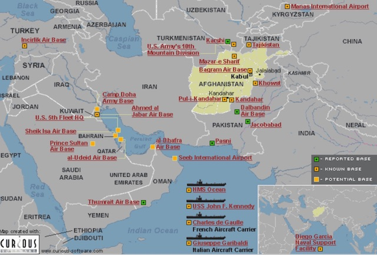

2019-05-15 08:00
We now have a proto-fascist in the White House, breaking everything he touches. Trump is at war with minorities, gays, women, non-Christians, science, education, the environment, the poor, Congress, the Constitution, Mexico, Central America, China, Russia, and even European allies. Americans are always willing to make regime change elsewhere — but we sure could use some here.
Even if we were not in the middle of a Constitutional crisis, distracted by Trump’s chaos and his intentional destabilization of government, most Americans wouldn’t pay much attention to militarism and foreign policy. The appointments of John Bolton, Michael Pompeo, and Elliott Abrams were no doubt less compelling than the Mueller Report, Brett Kavanaugh’s hearings or James Comey’s firing. But they were chosen to throw bloody red meat to Trump’s “base.”
Elliott Abrams is a war criminal convicted of lying to Congress, though he was subsequently pardoned. Mike Pompeo is fond of threatening enemies with US invasion. Like Pompeo, John Bolton has never met a war he didn’t love, pressing for “regime change” in Iraq, Syria, Libya, Venezuela, Cuba, Yemen, North Korea, and Iran. With the selection of these three sociopaths, Trump is telegraphing plans for Venezuela and Iran. Like Iraq, both countries have long been in the crosshairs of American neoconservatives. The administration’s plans may be old but they’re reliable — coups, puppet regimes, and manufactured threats to the US and its allies. All depend on gullibility and attention deficit from the American public.
In March 2017, amid US sanctions and right-wing sabotage and violence which included ongoing assassination attempts, the Venezuelan Supreme Court granted Nicolás Maduro emergency powers and dissolved the National Assembly. The “old” legislature was replaced by the Constituent Assembly, which was originally formed to rewrite the Constitution. Since then Venezuela has been divided over the legitimacy of both the “new” and the “old” legislature. But this is what happens when a nation grants special powers to a leader, who then uses them to delegitimize the legislature. Since 2017 the “old” legislature has functioned as Venezuela’s opposition and — like it or not — the “new” legislature is now the people’s house. In 2018 Maduro was re-elected president of Venezuela, which — again, like it or not — should have answered the question of legitimacy.
But in January 2019, after receiving an OK from Vice President Pence, the chairman of the “old” legislature, Juan Guaidó, simply took microphone in hand and declared himself president of Venezuela. This was apparently enough legitimacy for the Trump Administration’s John Bolton, who then set about to create rebellion among the Venezuelan military. Guaidó follows a long history of US puppetry — the Pahlavis, the Somozas, Batista, Ngo Dinh Diem, Costillo Armas, Rios Montt, Chalabi, Micheletti, Karzai, to name a few. By recognizing Guaidó and then expelling Maduro appointees from their own embassy, the Trump administration is now trying to depose the head of a divided but democratically-elected government.
Yet, of all the chaos that Trump has unleashed, the threat of an attack on Iran is the most terrifying. Neocons have never been happy with John Kerry’s Iran deal, in which Iran and the US agreed to an accord that would keep Iran from enriching weapons-grade plutonium in exchange for relief from US sanctions. Despite zero evidence of violations by Iran, Trump withdrew from the deal and is considering prosecuting Kerry for violating the Logan Act — for speaking with foreign diplomats, as most former American diplomats do even after leaving their diplomatic posts.
To escalate the provocations even further, Trump denoted the Iranian Guard a “terrorist” organization. And last week, following the deployment of a carrier strike force and B-52 bombers to the Persian Gulf, the US accused Iran of sabotaging tankers. Two Saudi, one Norwegian, and one Emirati ship were allegedly attacked with improvised limpet mines close to the Emirates. Trump threatened to send 120,000 troops to the region, telling the press, “It’s going to be a bad problem for Iran if something happens, I can tell you that. They’re not going to be happy.”
Iran’s Foreign Minister Mohammad Javad Zarif suggested that the sabotaging of vessels was a “false flag” operation and ascribed war noises to the work of the “four Bs” — Saudi Crown Prince Mohammed bin Salman, United Arab Emirates crown prince Mohamed bin Zayed, Israeli Prime Minister Benjamin Netanyahu and White House national security adviser John Bolton, who in 2015 advocated bombing Iran. And if one looks at a map of US military bases surrounding Iran, it is hard to imagine why Iran would want to provoke the US.

Europeans, who remain party to the Iran agreement, are skeptical of Trump’s accusations. Norbert Röttgen, chair of the Foreign Affairs committee of the German parliament, downplayed American warnings of imminent Iranian attacks. He said that the BND (German intelligence) has not found any escalation in Iranian threats. In fact, Röttgen described the US warnings as mere “saber rattling, a show of force to demonstrate seriousness and to justify American foreign policy vis-a-vis Iran.”
But, after a generation of American wars in the Middle East, there is still an appetite for more. The Trump administration and its supporters believe invading Iran would be a “slam dunk,” as the Bush administration thought Iraq would be. Almost a generation has gone by since the first Gulf War and the US is still not out of Iraq. And after a generation, hundreds of thousands killed, and trillions of dollars squandered, the US still remains in Afghanistan propping up a puppet regime. Geniuses like Arkansas Republican Senator Tom Cotton doubt it would take much to defeat Iran — “two strikes, the first strike and the last strike.”
Cooler heads remind us that a US invasion would be the Mother of all Quagmires. Juan Cole, a Mideast expert at the University of Michigan, published the “Top Ten differences between the Iraq War and Trump’s Proposed Iran War.” Among them:
Even FOX News host Tucker Carlson was concerned about Bolton’s influence. “More than anything in the world, national security adviser John Bolton would love to have a war with Iran. It will be like Christmas, Thanksgiving, his birthday [all] wrapped into one,” Carlson said.
Presidential candidate Bernie Sanders has introduced a petition to block Trump’s unilateral entry into a war with Iran, and Nancy Pelosi reminded everyone that “the responsibility in the Constitution is for Congress to declare war. So I hope that the president’s advisers recognize they have no authorization to go forward in any way. They cannot call the authorization, AUMF, the authorization for the use of military force that was passed in 2001, as any authorization to go forward in the Middle East now.”
Impeachment might be largely a formality in the almost certain absence of Senate prosecution of Trump’s crimes, but proceedings should be initiated anyway. Congress must insist on all its rights and powers, which include declaring war. As for Abrams and Bolton, they deserve tenures just as short as Anthony Scaramucci’s — if not cells at the Hague.
But if anyone should be getting regime change this month, please, let it be the American people.